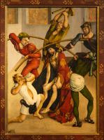

index
/
English
Jesus portrait
|
Passion of the Christ
Christ's Head with Crown of Thorns
Lucas Cranach the Elder
, 1520-25
Jesus portrait
Passion of the Christ

Lucas Cranach the Elder
English
|
Русский
|
Українська